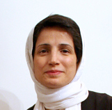

پذيرش > اخبار > بیانیه ای با حدود 700 امضاء در اعتراض به حکم صادره علیه نسرین ستوده: حکم صادره علیه (...)


 بیانیه ای با حدود 700 امضاء در اعتراض به حکم صادره علیه نسرین ستوده: حکم صادره علیه نسرین ستوده، برهانی است بر حقانیت راه او بیانیه ای با حدود 700 امضاء در اعتراض به حکم صادره علیه نسرین ستوده: حکم صادره علیه نسرین ستوده، برهانی است بر حقانیت راه او
20 بهمن 1389 - - نسخه قابل چاپ
تغییر برای برابری- با گذشت بیش از چهارماه بازداشت موقت، بازجویی و تحمل سلول انفرادی، سرانجام قاضی شعبه 26 دادگاه انقلاب اسلامی تهران، نسرین ستوده، وکیل مدافع شجاع و مقاوم حقوق بشر را به 11 سال حبس، 20 سال محرومیت از کار وکالت و 20 سال ممنوعیت خروج از کشور محکوم کرد.
موارد اتهامی نسرین ستوده در پرونده سازی مقامات امنیتی، «تبلیغ علیه نظام»، «اجتماع و تبانی به قصد بر هم زدن امنیت» و «عضویت در کانون مدافعان حقوق بشر» عنوان شده است. در حالی که پیش از این، برخی مقامات اطلاعاتی و قضایی مدعی شده بودند که اتهام نسرین ستوده همکاری با گروه های تروریستی است! نکته جالب اینجاست که بعد از این همه تهمت زنی های واهی و بی اساس، سرانجام بهانه ای جز مصاحبه با رسانه ها و همکاری با کانون مدافعان حقوق بشر به عنوان مصادیق مجرمیت نسرین ستوده اعلام نشد. در واقع، جرم اصلی نسرین ستوده، نه اقدام علیه امنیت ملی؛ بلکه دفاع از حقوق بشر، حقوق زنان و کودکان، حقوق متهمین و زندانیان سیاسی است.
نسرین ستوده نه تنها به این جرم به بیش از سی سال مجازات محکوم شده است، بلکه در کمال تعجب و تاسف خانواده او نیز از پیگیری وضعیت اش منع شده و به این دلیل متهم تلقی می شوند. بدیهی است که اتهام رضا خندان همسر نسرین ستوده، تنها تلاش برای آشکار کردن آن چیزی است که به ناحق بر نسرین ستوده روا شده است. جرمی که به احضار و بازداشت موقت او انجامید؛ و چه ساده اندیشند آنانی که تصور می کنند می توان با چنین حربه هایی مدافعان حقوق بشر و خانواده های آنان را به سکوت وادارند. و عجبا که مقاومت تحسین برانگیز این خانواده، خودکامگان را به رها کردن شیوه های بی حاصل و نخ نما شده شان نمی کشاند.
ما امضاء کنندگان این بیانیه ضمن محکوم کردن رای صادره علیه نسرین ستوده، و اعمال فشار بر خانواده او، خواهان تجدیدنظر مقامات قضایی در این حکم ناعادلانه و آزادی بی قید و شرط وی هستیم. البته، اعتقاد داریم چنین حکمی، نه تنها از محبوبیت نسرین ستوده نزد افکار عمومی نخواهد کاست، بلکه بیش از پیش حقانیت راه او را بر همگان آشکار خواهد کرد. همچنین، بدینوسیله از تمامی وجدان های بیدار جهان تقاضا می کنیم برای اعتراض به حکم صادره علیه نسرین ستوده ما را یاری دهند.
اسامی امضاءکنندگان (به ترتیب حروف الفبا):
آبتین زینالی، آتوسا پارسی تبار، آذر کفایی، آرش نصیری اقبالی، آرمان ساعدی، آرنوش ازرحیمی، آريامد آبيدر، آزاده جمشیدی، آزاده خسروشاهی، آزاده دواچی،آزاده فرامرزی ها، آزاده سخن گو، آزیتا رحمتی، آزیتا سیدی، آسیه امینی، آلما قوانلو، آناهیتا ناهید، آهو طبیب زاده، آیدا ابروفراخ، آيدا سعادت، آیدا صالحی، آیدا قجر، آیدا لطفی، آیدین جهان بخش، آینده آزاد، ابراهیم حیدری، احسان بداغی، احسان حسینی نسب، احسان نجفی، احمد احمدیان، احمد دارابی، احمدرضا علی حسینی، احمدعطار، اسماعلی رضایی، اعظم پیله ور، اعظم شکری، افشین بابا زاده، اکبر عطری، اکرم گرگانی، اکرم موسوی،الناز انصاری، الناز ناطقی، الهام ملک پور، الهه امانی، الهه امیری، الهه خوش نام، الهه رحمانی، الهه صدر، الهه فراهانی، امید ایران مهر، امید فاتح، امید کشتکار، امیر حسین فتوحی، امیر حسین گنج بخش، امیر حیاتی، امیر رشیدی، امیر شوکتی، امیر گرگانی، امیر لاکی، امیر م. معصومی، امید معماریان، امیر نیک پی، امیر ه. منش، امیرحسام صلواتی، امیر سالارفر، امیل ایمانی، امین احمدیان، امین راستگو، اندیشه جعفری، انسيه سلماني، اويس اخوان، ایران آزاد، ایراندخت آزاد، ایراندخت امیدوار، ایمان رسولی، ایمان روستا، ایمان قربانی.
بابك فهيمي شمراني، بابک صفا، بابک یحیوی، بامشاد تابناک، بتول راثی، بتول عزیزپور، بردیا افشار، بلال مرادویسی، بنفشه جمالی، بنفشه رنجی، بنیامین صدر، بهار خسور، بهار عامری، بهارا بهروان، بهاره افقهی، بهاره شرقی، بهاره همتی، بهرام احسانی، بهرام رحیمی، بهرام صدوقی، بهروز حشمت، بهروز دواچی، بهروز علوی، بهروز فایقیان، بهزاد رفیعی، بهمن امینی، بهمن فرهـبخش، بهمن مبشری، بهمن نیرومند، بهنام احمدي، بهنام نفیس، بيژن فهيمي شمراني، بیژن ماجری، بیژن مهر.
پرستو اله ياري، پرستو فروهر، پروانه احمدی، پروانه پرهیزکاری، پرویز حدادی زاده، پرویز هراتی نژاد، پروین ابراهیم زاده، پروین اردلان، پرينازطاهباز، پری پوریا، پری رفیع گیلانی، پریسا انصاری، پریسا روشن فکر، پریسا کریمی، پژهان مختاری، پوپک مهاجر، پوران رضایتی، پویا عزیزی، پیمان آ. موید، تاتار نیکی، تارا سپهری فر، تارا نجداحمدی، تراب مستوفی، ترلان نیک نهاد، تورج پاشایی، تورج لطفی، ثرنا صابر، ثریا فلاح.
جاوید ابراهیمی، جاوید پاینده، جلوه جواهری، جمال سازگار، جمشيد چالنگي، جمشید تقوی بیات، جمیله ایرانی، جهانبخش نيک ذات، جواد مقدم، جواد اسدیان، جواد جمشیدی، جواد منتظری، جوان معتمدی، حبیب رستمی، حبیب قوی دل، حجت نارنجی، حسام نظری، حسن بهگر، حسن ساعدی، حسن سعیدی، حسن شریعت مداری، حسن عرب زاده، حسن نايب هاشم، حسين شاهکار، حسین اقتداری، حسین باقرزاده، حسین حجزی، حسین خسروی، حسین شرنگ، حسین علوی، حسین منتظر حقیقی، حمید استوار، حمید حمیدی، حمید زنگنه، حمید ساعدی، حمید صدر، حمید مافی، حمید معتمد، حمید ندایی، حمیدرضا حدادی، حمیدرضا واشقانی فراهانی، حمیدرضا موسایی، حمیده روحانی، حمیده روشنگر، حمیده سرمست، حمیده قاسمی، حمیده نظامی، حميده وطني، خاطره پناهی، خدیجه مقدم، خندان حسینی نیا، خورسند ستوده، خورشید عابدین.
داریوش اطهاری، داریوش تقی پور، دانسل شیلان، داود غلام اسد، داوود نوائيان، دکتر فرشید فریدونی، دنیا راد، دلارام علی ،رها عسگری زاده ،راحله کارگر، راسان ایرانشهر، راضیه اسدزاده، راما هاشمی علیا، رامین صفی زاده، رامین محمودی، رای میریان، رحمان شکوهی، رزیتا رجایی، رزین مناجاتی، رسول زینایی، رسول طالبی، رضا برومند، رضا بی شتاب، رضا ترابی، رضا حسيني، رضا رحمتی، رضا سیاووشی، رضا کریمی، رضا مبین، رضا معصوميان، رضا موسوی، رضا میر، رضا هیوا، رضوان مقدم، رقیه رضائی، رها فتاحی، روجا بندری، روح االله اسلامی، روزبه شفیعی، رويا طلوعي، رویا اسکندری، رویا تیموری، رویا س. ایرانی، رویا صحرائی، رویا کاشفی، رویا ملکی، ریحانه جدیدفرد، ریحانه رجایی، زاده دواچی، زرین شقاقی، زهرا داوري، زهرا رحیمی، زهره اسدپور، زهره دیودل، زهره رجبی، زهره سمیعی، زویا اسکندریان، زویا مجد، زینب پیغمبرزاده، زینب زمانی، ژیلا بنی یعقوب، ژیلا عطایی، ژیلا گلعنبر.
ساچلی افلاکی، ساحل سیستانی، سارا احمدی، سارا ایمانیان، سارا زارع، سارا شوکت، سارا فراهانی، سارا کریمی، سارا محمودزاده، ساسان مهتدی، ساقی عقیلی، سام سامانی، سام نیکو، ساناز محسن پور، سانتيک تونيان، سبحان ابراهیمی، سپیده پوراقایی، سپیده جواهری، سپیده شوشتری، سپیده یوسف زاده، ستاره بشیری، ستاره فراهانی، ستاره محمودی، ستاره هاشمی، سحر رضازاده، سحر سجادی، سحر غلامی، سحر مفخم، سحر نوازنده، سعيد بياني، سعيد نساج، سعید رحیمی، سعید شریفیان، سعید فتاحی، سعید کلانکی، سعید مدنی، سعید نعیمی، سعیده نظری، سکینه زارع محمدی، سلماز مقدم، سلمان اصغری، سلمانی پناهی، سمانه عابدینی، سمیرا افخمی، سمیه بهادری، سمیه بهروان، سمیه رزاق، سمیه صمدی، سهراب بهداد، سوسن طهماسبی، سوسن فرخ نیا، سوفیا صدیق پور، سولماز ایکدر، سولماز خردمندنیا، سولماز یگانه مهر، سياوش باقري، سیامک انصاری، سیامک ضیابری، سیامک فرید، سیاوش عبقری، سیاووش جلیلی، سید حسن راستگو، سیما حسین زاده، سیما شاه عباسی، سینا چالشگر.
شادي امين، شادی صدر، شاهین نراقی، شایان وحدتی، شقایق کمالی، شکوه میرزادگی، شهاب اسدی، شهاب فیضی، شهابالدین شیخی، شهرام رفیع زاده، شهربانو جنالیپور، شهرزاد گارسچی، شهره موحدی، شهريارشاهکار، شهریار مندنی پور، شهلا بهاردوست، شهلا عبقری، شهلا هویدا، شهناز غلامی، شهناز نیکبخش، شهین خاک نگار، شهین نراقی، شیرین بیان، شیرین پارسیا، شیرین طبیب زاده، شیوا بدیهی نژاد، شیوا سخن، شیوا طحان.
صادق نقاشزاده، صبرا رضایی، صبری نجفی، صدیقه مقدم، طاها شاهین، طاهر رهبری، طلعت تقی نیا، طه ولی زاده، طیبه مینویی، ظها مردی.
عادل سلیمی نژاد، عباس خرسندی، عباس معروفی، عبدالرحمان سینایی، عدلان پارسا، عزیز بیکس، عسل اخوان، عشا مومنی، عطیه واعظی پور، عطیه وحیدمنش، عفت ماهباز، عليرضا جمالی افرمجانی، علی افشاری، علی اكبر مهدی، علی اکبر خسروشاهی، علی اکبر ذوالفقار رجایی، علی باقری، علی بکائی، علی حسن زاده، علی سلیمانی راد، علی شاهد، علی صادقی، علی طایفی، علی عبدی، علی علوی، علی فتوتی، علی کلائی، علی گوشه، علی ماهباز، علی واعظی پور، علیرضا جابری، علیرضا محسنی، علیرضا معمر، عمادالدين مرعشي، غزل عسکری.
فاطمه اتراکی، فاطمه اسماعیلی، فاطمه پوراحمد، فاطمه تقی پور، فاطمه رضایی، فاطمه رضایی، فاطمه مقدم، فاطمه ممقانیان، فتانه صادقی، فتانه کیان ارثی، فتحیه زرکش، فخری حسینی، فخری شادفر، فخری نامی، فرامرز فهيمي شمراني، فرح حامدانی فرد، فرح شیلانداری، فرح کمانگر، فرخنده احتسابیان، فرزاد نعمت الهي، فرزانه محجوب، فرزین دخت فیروز، فرزین شاهد، فرشته رحمتی، فرشته شيرازي، فرشته قاضی، فرشته مجیدی، فرشید آذرنیوش، فرشید مقدم، فرناز کمالی، فرهاد زینالی، فرهاد صوفی، فرهاد طالبیان، فرهاد نعمانی، فرهناز شفیعی، فرهنگ تاولی، فروغ رسولی، فروغ سمیع نیا، فروغ عرب، فروغ قره داغی، فريده پورعبدالله، فری پور، فریار نیکزاد، فریبا داودی مهاجر، فریبا فرنوش، فریبرز رئیس دانا، فریبرز طبیب زاده، فرید کرمی، فریده آزادی، فریده مقدم، فریده یزدی، فریدون عباس نژاد، فيروزه مهاجر، فیروز حاجی، فیروزه بنی صدر، فیروزه فولادی، فیروزه مهاجر، قاسم خادم، قاسم فیروزی.
كاميار جولايي، كيوان مهجور، کارن جواهری، کاظم علمداری، کاظم فخاران، کاظم هاشمی، کامبیز قائم مقام، کامران ملک مطیعی، کاوه اسدی، کاوه کرمانشاهی، کاوه مظفری، کبرا کریمی، کسرا کسرایی، کورش افطسی، کورش معمر، کوروش صحتی، کوهیار گودرزی، کیانا حسینی، کیانوش اخوان کرباسی، کیمیا سلطانی، کیوان احترام زاده، کیوان عموزاده، گرجی مرزبان، گل محمدي ارشاد، گلاله بهرامی، گوهر باباخانی، گوهر بیات، گوهر شميراني، گیتسا عاکف.
لاله حسین پور، لوا زند، ليلا خلج زاده، لیدا اشجایی، لیلا اسدی، لیلا صحت، لیلا کرمی، لیلا موری، لیلی ایمن، لیلی ایمن، لیونا عیسی قلیان.
ماری نوچه دهی، مازیار ایرانی، مازیار مهرپور، مازیار هاشمی، مالی پویا بهار، ماندانا خلج، ماهور وجدی، مجتبی حدیدی، مجيد نعمت الهي، مجید ابراهیمی، مجید خانکی، محبوبه حسین زاده، محبوبه عباسقلی زاده، محسن دلیلی، محسن رحمتی، محسن نادري، محسن نژاد، محمد اصغری آق مشهدی، محمد افراسیابی، محمد برزنجه، محمد برزنجه، محمد بینازاده، محمد علی عبدالهی، محمد غزنويان، محمد فرهادی، محمد کوراوند، محمد ملکزاده، محمد نجف زاده، محمدابراهيم احمدي، محمدرضا علایی نژاد، محمدرضا یزدانی، محمود پورباقر، محمود رفیع، محمود عراقی، مرتضی محیط، مرجان ريسماني، مرضیه آریان فر، مرضیه بخشی زاده، مرضیه شکیبا، مرمانضیه شاد، مريم کسایي، مریم بهرمن، مریم حکمت شعار، مریم رحمانی، مریم سمیعی، مریم صارمی، مریم صالحی، مریم طبیب زاده، مریم کیوان، مریم میرزا، مریم نظری، مریم یاسمین، مریم یزدان پرست، مژ گان تقی نیا، مژگان انجم، مژگان ثروتی، مژگان هاشمی مقدم، مسعود حاجیان، مسعود شب افروز، مسعود صابری، مسعود مولوی، مسعود سعیدی، معصومه ایزدپناه، معصومه تقی پور، معصومه زمانی، معصومه محبوبی فر، مقصود رنجبر، مناف عماری، منصوره شجاعی، منصوره فتحی، منصوره وحدت، منوچر فاضل، منوچهر بهدانی، منوچهر فاضل، منیژه شکوهی تبریزی، منیژه مقدم، مهده صالحی پور، مهدی آدینه، مهدی خانبابا تهرانی، مهدی دیزاجی، مهدی روشن، مهدی سفریان، مهدی طاهری، مهدی ماهباز، مهدی وزیر بانی، مهر جهانی، مهران براتی، مهران كردبچه، مهران مهدوی، مهراوه خوارزمی، مهرداد رضوانی، مهرداد لوایی، مهرداد مشایخی، مهرنوش اعتمادي، مهرنوش حجتی، مهرنوش کریمی، مهری جارچلو، مهسا نصراللهی، مهشاد ترکان، مهشید راستی، مهناز محمدی، مهین افشار، مهین امامی، مهین شکرالله پور، ميترا خورشيدي، میترا اعظم، میترا صمدزاده، میترا یوسفی، میثم مشایخی، مینا نیک، میهن روستا.
نادر حاج محسن، نادره افشاری، نازی عظیما، نازین نصرویی، ناصح فریدی، ناصر پویافر، ناهید باقری، ناهید پورعیسی، ناهید توسلی، ناهید جعفری، ناهید خیرابی، ناهید سرشگی، ناهید شاندیزی، ناهید کشاورز، ندا جعفریان، ندا فرخ، ندا موحد، نرگس کرمانشاهی، نسترن خسروی، نسرین افضلی، نسرین بصیری، نسرین پویا، نسرین حمیدی، نسرین رهبر، نسرین کامران، نسرین کاووسی، نسیم تبیانیان، نسیم خسروی مقدم، نسیم سبحانی، نسیم سرابندی، نسیم سلطان بیگی، نسیم واحدی، نصرت الله مشایخی، نغمه رضائی، نفیسه آزاد، نفیسه محمدی، نقی حمیدیان، نکو خانيان ارمني، نگار بیات، نگار سماک نژاد، نگين خداياري، نگين سلماني، نورالله علوي شرضا، نورایرباباخانی، نوری نیک زاد، نوشاد احمدي، نوشین شاهرخی، نونا اکبری، نيکزاد زنگنه، نیایش طلایی، نیره توحیدی، نیره نظری، نیکو طبیب زاده، نیکی ایرانی، نیلوفر بیضایی، نیلوفر کشمیری، نیما راسخ، نینا وباب.
هاتف سلطانی، هاجر کبیری، هادی سرداری، هادی فاطمی، هاله میرمیری، هانا دارابی، هایده تابش، هایده سیدی، هایده مغیثی، هدا امینیان، هستی حسینی، هلن عبيري، هلي پيران،هما مداح، هما وثوق رضوي، همایون مهمنش، هومن پولادرکه، وجیهه خوش بین، وجیهه مقدم، وحدت احمدپور، وحيد نساج، وحیده محمودی، وفا معظی، وهاب کردقراچلو، ویدا جهانبخش، ویدا فرهودی، ویسدا تهرانی، ویکتوریا آزاد، یادیه قربانی، یاسمن نیلفروشان، یاور خسروشاهی، یحیا محمدی.
ارسال به
بالاترین
،
توییتر
،
فریندفید
،
فیسبوک
در همين بخش :
 پروین ذبیحی برنده جایزه حقوق بشری سازمان غيردولتى اتريشى سودويند شد پروین ذبیحی برنده جایزه حقوق بشری سازمان غيردولتى اتريشى سودويند شد
پخش کارت پستال و بروشور در روز جهانی زن در تهران
تمدید زمان برای امضای بیانیهی جمعی از فعالان زن به مناسبت هشت مارس
مجوزی که در نطفه خفه شد
بیش از 2000 امضا در اعتراض به تبعیض های آموزشی به مجلس تحویل داده شد
ديگر بخش ها :
طرح یک میلیون امضا
|
مقالات
|
سایت نوشته ها
|
اخبار
|
گزارش كمپين
|
گفت و گو
|
علیه سکوت
|
كوچه به كوچه
|
نامه های شما
|
گزارش ویژه
|
گفتگو با اعضا
|
ویژه سالگرد کمپین
|
تصویر برابری
|
دل آرام علی
|
تریبون
|
مقالات
|
تاریخ شفاهی
|
خارج از چارچوب
|
کتابخانه
|
درباره کمپین
|
کمپین در شهرها
|
کمپین در بند
|
صدای تغییر
|
ویژه 22 خرداد
|
لایحه حمایت از خانواده
|
گالری
|
عشا مومنی
|
امیر یعقوبعلی
|
خدیجه مقدم
|
راحله عسگری زاده و نسیم خسروی
|
پروین اردلان،جلوه جواهری، مریم حسین خواه، ناهید کشاورز
|
زینب پیغمبرزاده
|
سعیده امین، سارا ایمانیان، محبوبه حسین زاده، ناهید کشاورز و همایون نامی
|
احترام شادفر
|
نسیم سرابندی زاده،فاطمه دهدشتی
|
وبلاگ مهمان
|
پرونده خرم آباد
|
دستگیری ها
|
مریم مالک
|
پرستو اللهیاری
|
مهرنوش اعتمادی
|
سمیه رشیدی
|
Other Languages
|
همراهان
|
«فراخوان کمپین ده روز با بهاره هدایت»
| English
|